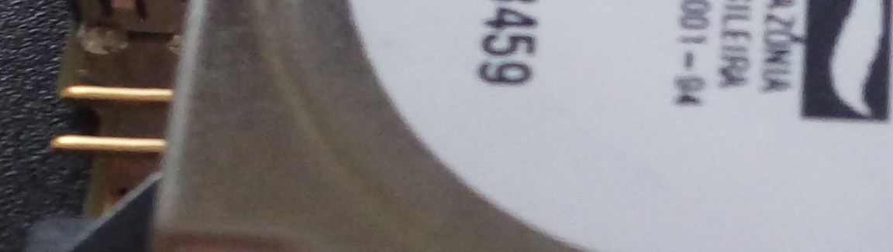

Other projects
This portfolio focuses on my side projects but I have some professional work as well. However, these projects are either private or protected under NDAs, so I can't showcase them here.
From early 2017 to late 2018 I worked at a start-up based in Passo Fundo, Brazil. My job was to code, fix and test new functionalities and projects, all of them based on Asp.NET Core (using C# and JavaScript). Some of the projects developed there was an enterprise resource planner, a task manager for a construction company and an event managing software, among others - all of them web-based.
Then I moved to Itajaí and in early 2019 I started working in another (larger) company. The job was to maintain an already existing, major, desktop-based enterprise resource planner. The project is written mostly in C# with WinForms. I left early 2020.
I currently do work as a freelancer (not restricted to coding). Also helped with game mods for TrackMania, working with level design (some of the maps) and testing as a volunteer.